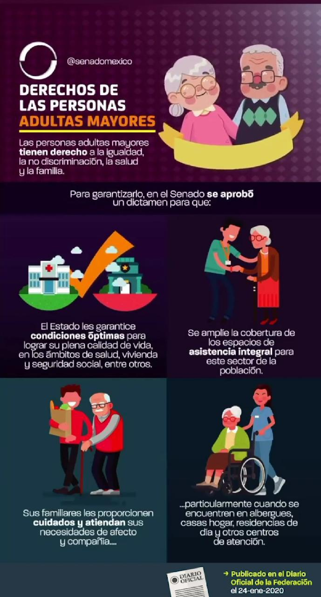

La Constitución de Colombia establece que la familia, la sociedad y el Estado deben proteger a las personas de la tercera edad. Existen leyes que promueven sus derechos, como la Ley 1171 de 2007, que garantiza beneficios en transporte, cultura y salud; la Ley 1251 de 2008, que protege sus derechos y promueve su participación social; y la Ley 1276 de 2009, que crea los Centros de Vida y Bienestar del Anciano. Estos marcos legales buscan asegurar dignidad, equidad y solidaridad hacia los adultos mayores, pero su efectividad depende de su correcta aplicación y del conocimiento ciudadano sobre ellas.
